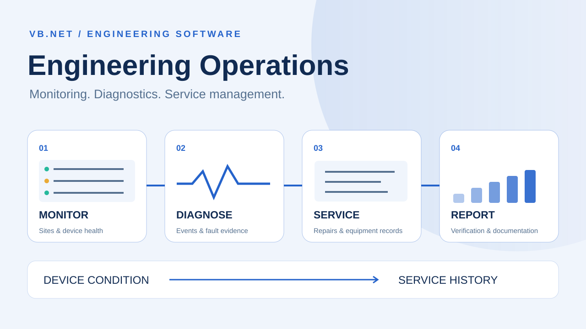

Desktop Software · Engineering Operations
Engineering Operations Suite — Monitoring, Diagnostics & Service Management
Two independently implemented VB.NET applications for monitoring, diagnostics and service management, presented together. Shared-data integration and automated hand-off are proposed designs.
Implemented applications · Proposed integration
Two independently implemented VB.NET applications, presented together. Shared-data integration and automated hand-off are proposed designs.
One engineering story: device condition to service history
This project brings monitoring, diagnostics and service documentation together in one portfolio presentation. The monitoring application helps engineers identify and investigate device issues across sites; the service application records the equipment, intervention, repair and supporting documentation.
My contribution
Developed VB.NET desktop applications and their operational interfaces for monitoring, issue follow-up, device records, repair tracking and reporting. The combined case study presents both areas as complementary modules of engineering operations.
| Module | Engineering purpose | Documented functions |
|---|---|---|
| Monitoring & diagnostics | Understand equipment condition | Site views, health evaluation, fault-test panels, events and issue tracking |
| Service management | Retain equipment and intervention history | Device records, service calls, repair dates, corrective actions, warranty/calibration fields |
| Documentation & reporting | Make operational evidence retrievable | Record search, technical documentation and customer-report fields |
01 · Monitoring & diagnostics
Making health state traceable to an observation
The original interface documents a VB.NET WinForms application for multi-site monitoring, diagnostics, issue tracking and reporting. The public release contains the interface preview and analysis, not recovered source code or a database export. Therefore the design discussion separates visible responsibilities from proposed internals.
A health display needs device identity, observation time and observation meaning. The explanatory model distinguishes healthy, faulted, stale and unknown states. A missing observation should not silently become a healthy device, and a reachable endpoint does not establish application-level correctness. These state rules are proposed review criteria rather than a claim about the unrecovered implementation.
Data acquisition, health evaluation, issue management and presentation are different responsibilities. Windows Forms binding explains how controls can present records, while input validation supports operator-entered fields. Neither reference establishes the original application’s polling mechanism, storage engine or threading model. RFC 5424 is used only for event-record concepts; syslog support is not asserted.
An operator workflow should make the affected site/device, symptom and latest evidence visible before an issue is acknowledged or closed. Reports need to retain time range and filters so the same record can be understood later. Demonstrating this professionally would use a synthetic dataset clearly labelled as a UI demonstration, rather than invented production uptime.

Review scenarios and expected evidence
These scenarios specify what evidence would support a review. They do not report additional completed tests.
| Review area | Method | Evidence to inspect |
|---|---|---|
| Missing observation | Stop an illustrative update stream | Stale/unknown distinguished from healthy |
| Device fault | Supply a fault state in reference data | Affected identity and symptom preserved |
| Operator action | Acknowledge then review an issue | Action does not erase source observation |
| Report filter | Change site and time range | Report states the applied context |
Technical references and provenance
Primary references support the engineering explanation, not claims about this project's undocumented configuration or results.
- Microsoft — Windows Forms input validation
- Microsoft — Windows Forms data binding
- Syslog message model — RFC 5424
This is an interface-informed proposed design. No extra application screenshot, running demo or implemented backend feature is represented as recovered source evidence.
Reading the original interface
The source poster groups a main monitoring dashboard, site detail and rules analysis, a connection or fault-test panel, and an event / failure-tracking view. These areas support recognition, diagnosis and follow-up. The preview is low resolution: small labels, exact values and device protocols cannot reliably be recovered from it.
Proposed functional design
Collect observations through device-specific adapters on a background scheduler. Each observation records the check type, timestamp, result and data quality. A separate rule engine evaluates condition; the interface displays both condition and the time of the last successful observation.
Use healthy, warning, critical, unknown and stale states. A failed network check is evidence of an unsuccessful check, not sufficient proof of a hardware failure. Expired data must stop appearing as a fresh healthy reading.
Records and operational flow
Suggested entities are Site, Device, ProbeResult, HealthRule, Event, Incident and IncidentAction. A device has many observations; several repeated events may belong to one incident. Record state transitions and aggregate repeat failures to avoid creating an incident on every polling cycle.
Verification scenarios
Exercise unavailable devices, slow responses, stale observations, database failure, recovery and shutdown during an active check. The interface should remain responsive and display uncertainty explicitly. No measured uptime or response-time benchmark is inferred from the screenshot.
02 · Service management
Connecting a device to its complete service history
The source interface shows device records, repair information and warranty/calibration fields. Its purpose is service operations and technical documentation, which differs from monitoring live device health. The public evidence is an application preview; source code, storage schema and exported service reports have not been recovered.
An explanatory data model separates a device from individual service jobs and their documents. A device may have several interventions, and a repair may have several observations and attachments. This prevents a proposed design from overwriting history whenever a new visit is recorded. The relationships explain the application’s purpose; they do not disclose its original database tables.
A service workflow can progress through intake, diagnosis, repair, verification and closure, with responsibility and supporting records at each stage. A closed ticket and a calibrated device are different statements. Calibration needs its own procedure and result; a warranty date is administrative information and should not become evidence of technical acceptance.
Microsoft’s validation and binding guidance supports form-field handling and display of records. Appropriate review scenarios include invalid dates, missing device identity, duplicate references, attachment handling and retrieval of past work. The example state sequence is proposed for documentation; specific controls, permissions and export formats remain unverified.

Review scenarios and expected evidence
These scenarios specify what evidence would support a review. They do not report additional completed tests.
| Review area | Method | Evidence to inspect |
|---|---|---|
| New service visit | Associate a second job with one device | Prior job remains retrievable |
| Invalid date | End date precedes intake date | Validation explains the conflicting field |
| Attachment reference | Review a missing or replaced document | Record shows its document status |
| Closure | Attempt closure without verification context | Review rule distinguishes repair from acceptance |
Technical references and provenance
Primary references support the engineering explanation, not claims about this project's undocumented configuration or results.
The workflow and relationships are a proposed reconstruction from the interface. They are not a recovered schema or a claim that every validation rule is implemented.
Reading the original interface
The screenshot shows device, article and serial identifiers; site and service-call details; receipt and repair dates; project, customer and region; warranty and calibration validity; return reasons; corrective-action summary; repair type and personnel; forwarding fields; status and a customer report. New, modify, save, delete and search controls sit above a record grid.
The poster names VB.NET, WinForms, ADO.NET, Crystal Reports and SQL Server / Access. It does not establish which database engine the published application actually uses.
Proposed data design
Keep device identity separate from each service visit. Model Customer → Project → Site → Device; link each Device to many ServiceCase records. RepairAction, PartReplacement and Document belong to a case. Warranty and Calibration retain historical records rather than overwriting prior validity dates.
Integrity and workflow
Use unique case identifiers, controlled status transitions and date checks so a repair cannot precede receipt. Save a case and its related actions atomically. Use parameterized database operations, a change audit and conflict detection for concurrent edits. Archive records that have issued reports rather than silently removing their history.
The workflow is receipt → fault documentation → diagnosis → repair → verification / calibration → reviewed report → delivery and closure. Failed verification returns to diagnosis. Internal engineering notes and the customer-facing report are separate records.
Interface and verification
A proposed layout uses search and the record list beside tabs for device identity, service visit, repairs / parts, warranty / calibration and documents. Verify multiple visits for one device, calibration renewal without loss of history, concurrent editing and failed attachment storage.
From an observed issue to a documented repair

The proposed operational hand-off is observe → investigate → record a service case → diagnose and repair → verify → report and close. Preserve device identity, timestamps and source observations when connecting an incident to a service visit. Repair closure does not by itself prove calibration or restored live health.
The two original interface previews document implemented applications. The public repository currently provides documentation and images; the shared data model, automated hand-off and review scenarios describe an integration design, rather than a recovered software integration or measured production result.
Original application interfaces
Original source media remains available in full resolution. The combined cover is an illustrative workflow, separate from these application previews.